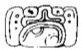

| A1 | Tzolk'in: 4 Ak'bal | |
| B1 | Haab: 11 Muwan |
| A2 | Star-over-shell "war befell" | |
| B2 | B'alah CHAN-na | |
| C1 | K'awiil | |
| D1 | u KAB'-hi "he caused it to be done" | |
| C2 | Nuun Ujol | |
| D2 | Chaak | |
| E1 | Mutul Nal "Mutul Person" | |
| F1 | 13 [tzuk?] |
| E2 | Tzolk'in: 9 Imix | |
| F2 | Haab: 4 Pax |
| G1 |  | Star-over-shell "war befell" |
| H1 | pu-lu-li? | |
| G2 | u K'AB-hi "he caused it to be done" | |
| H2 | Yuk'noom | |
| I1 | CH'EEN-na | |
| J1 | LOK-yi "he escaped" | |
| I2 | Nuun Ujol Chaak | |
| J2 | Distance Number: 18 days | |
| K1 | Distance Number continued: 1 Winal | |
| L1 | Distance Number continued: 5 Tun | |
| K2 | ???-ya | |
| L2 | B'alah CHAN-na | |
| M1 | K'awiil | |
| N1 | ???? | |
| M2 | Dragon-Ha' "Dragon Water" | |
| N2 | ????? |